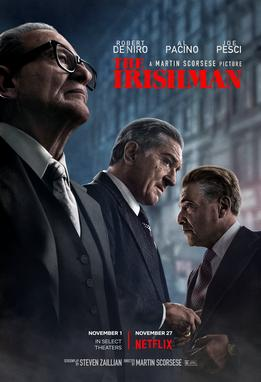

Forrest, a man with low IQ, recounts the early years of his life when he found himself in the middle of
key historical events. All he wants now is to be reunited with his childhood sweetheart, Jenny.
94% liked this film
Pulp Fiction
Initial release: 1994
Director: Quentin Tarantino
In the realm of underworld, a series of incidents intertwines the lives of
two Los Angeles mobsters, a gangster's wife, a boxer and two small-time criminals.
92% liked this film
The Godfather
Initial release: 1972
Director: Francis Ford Coppola
Don Vito Corleone, head of a mafia family, decides to hand over his empire to
his youngest son Michael. However, his decision unintentionally puts the lives of his loved ones in
grave danger.
93% liked this film
Schindler's List
Initial release: 1993
Director: Steven Spielberg
Oskar Schindler, a German industrialist and member of the Nazi party, tries
to save his Jewish employees after witnessing the persecution of Jews in Poland.
94% liked this film
The Shawshank Redemption
Initial release: 1994
Director: Frank Darabont
Andy Dufresne, a successful banker, is arrested for the murders of his wife
and her lover, and is sentenced to life imprisonment at the Shawshank prison. He becomes the most
unconventional prisoner.
96% liked this film
The Dark Knight
Initial release: 2008
Director: Christopher Nolan
After Gordon, Dent and Batman begin an assault on Gotham's organised crime,
the mobs hire the Joker, a psychopathic criminal mastermind who offers to kill Batman and bring the city
to its knees.
94% liked this film

The Irishman
Initial release: 2019
Director: Martin Scorsese
In the 1950s, truck driver Frank Sheeran gets involved with Russell Bufalino
and his Pennsylvania crime family. As Sheeran climbs the ranks to become a top hit man, he also goes to
work for Jimmy Hoffa -- a powerful Teamster tied to organized crime.
87% liked this film
Nightcrawler
Initial release: 2014
Director: Dan Gilroy
Louis Bloom, a petty thief, realises that he can make money by capturing
photographs of crime scenes and starts resorting to extreme tactics to get them.